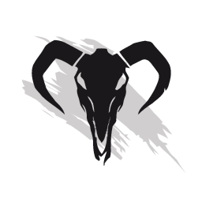

Marked by [FURY] 2007-2018
Marked by [FURY] 2007-2018
Marked by [FURY] 2007-2018
Marked By [Fury] zostało stworzone 30 września 2007 roku przez grupe przyjaciół z gildii [CB] oraz [STNS]. Na początku było nas 6 osób, lecz wkrótce dołączyli do nas znajomi. Od tamtej pory następowały liczne rotacje graczy, ale gildia działała i działa w sposób nieprzerwany od 11 lat. Nasze szeregi zasilają aktywni (mniej, lub bardziej, ale aktywni) gracze. Gramy głównie PvE, ale nie zamykamy się jedynie na ten tryb.
Gildią dowodzi aktualnie duet Banshee.9328, oraz Wojciech.8024. Pełną listę osób znaleźć można w dziale Członkowie